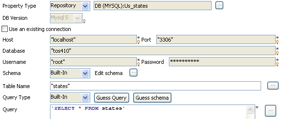
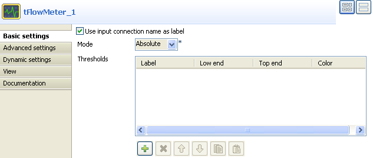
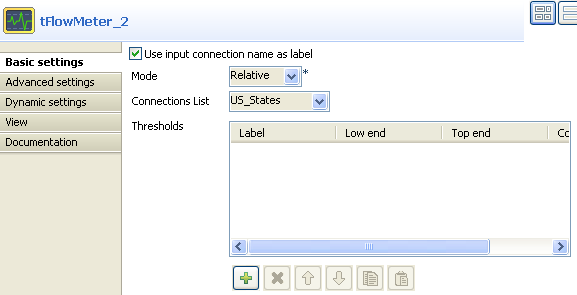
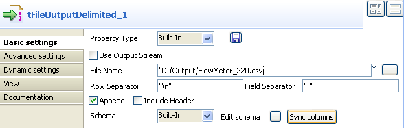

Scenario: Catching flow metrics from a job
The following basic job aims at catching the number of rows being passed in the flow processed. The measures are taken twice, once after the input component, that is, before the filtering step and once right after the filtering step, that is, before the output component.

- Click and drop the following components from the Palette to the Designer workspace: tMysqlInput, tFlowMeter (x2), tMap, tLogRow, tFlowMeterCatcher and tFileOutputCSV.
- Link the main job using row main connections and click on the label to give consistent name throughout the job, such as US_States from the input component and filtered_states for the output from the tMap component, for example.
- Link the tFlowMeterCatcher to the tFileOutputCSV component using a row main link also as data is passed.
- On the tMysqlInput properties view, configure the connection properties as Repository, if the table metadata are stored in the Repository. Or else, set the Type as Built-in and configure manually the connection and schema details if they are built-in for this job.
- The Schema is simply made of two columns: idState and LabelState.
- The Query type is Built-in for this job example.
- The 50 States of the USA are recorded in the table us_states. In order for all 50 entries of the table to get selected, the query to run onto the Mysql database is as follows:
select * from us_states. - Select the relevant Encoding type in the list.
- Then select the following component which is a tFlowMeter and set its properties.
- Check the box Use input connection name as label, in order to reuse the label you chose in the log output file (tFileOutputCSV).
- The mode is Absolute as there is no reference flow to meter against, also no Threshold is to be set for this example.
- Then launch the tMap editor to set the filtering properties.
- For this use case, drag and drop the ID and States columns from the Input area of the tMap towards the Output area. No variable is used in this example.
- On the Output flow area (labelled filtered_states in this example), click the arrow & plus button to activate the expression filter field.
- Drag the LabelState column from the Input area (row2) towards the expression filter field and type in the rest of the expression in order to filter the state labels starting with the letter M. The final expression looks like:
row2.LabelState.startsWith("M") - Click OK to validate the setting.
- Then select the second tFlowMeter component and set its properties.
- Check the box Use input connection name as label.
- Select Relative as Mode and in the Reference connection list, select US_States as reference to be measured against.
- Once again, no threshold is used for this use case.
- No particular setting is required in the tLogRow.
- Neither does the tFlowMeterCatcher as this component's properties are limited to a preset schema which includes typical log information.
- So eventually set the log output component (tFileOutputCSV).
- Check the Append box in order to log all tFlowMeter measures.
- Then save your job and run it.


Note: The Thresholds information is of use within a supervising tool such as Talend's Activity Monitoring Console in order to get a proportional representation of the flow process. See Activity Monitoring Console User guide for more information.




The Run Job view shows the filtered state labels as defined in the job.

In the delimited csv file, the number of rows shown in column count varies between tFlowMeter1 and tFlowMeter2 as the filtering has then been carried out. The reference column shows also this difference.